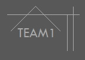

<!DOCTYPE html>
<html>
<head>
    <meta charset="UTF-8">
    <meta http-equiv="X-UA-Compatible" content="IE=edge">
    <meta name="viewport" content="width=device-width, initial-scale=1.0, maximum-scale=1.0, minimum-scale=1.0, user-scalable=no">
    <title>TEAM1 오시는길</title>
    <script type="text/javascript" src="https://openapi.map.naver.com/openapi/v3/maps.js?ncpClientId=lrzmuyxnky"></script>
    <style>
    </style>
</head>
<body>
<div id="map" style="width:50%;height:400px;margin:150px auto; "></div>

<script>
var HOME_PATH = window.HOME_PATH || '.';

var cityhall = new naver.maps.LatLng(35.1528172,129.1092503),
    map = new naver.maps.Map('map', {
        center: cityhall.destinationPoint(0, 500),
        zoom: 15
    }),
    marker = new naver.maps.Marker({
        map: map,
        position: cityhall
    });

var contentString = [
        '<div class="iw_inner" style="padding:10px; text-align:center;">',
        '   <h3>TEAM1</h3>',
        '   <p>부산광역시 수영구 광안동 수영로 525 <br />',
        '       <br />',
        '       <br />',
        '       <a href="http://allintonight.cafe24.com" target="_blank">allintonight.cafe24.com</a>',
        '   </p>',
        '</div>'
    ].join('');

var infowindow = new naver.maps.InfoWindow({
    content: contentString
});

naver.maps.Event.addListener(marker, "click", function(e) {
    if (infowindow.getMap()) {
        infowindow.close();
    } else {
        infowindow.open(map, marker);
    }
});

infowindow.open(map, marker);
</script>
</body>
</html>